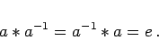
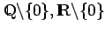
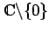
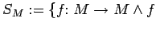

Inhalt Index DeskTop Bronstein

 Algebra und Diskrete Mathematik Klassische algebraische Strukturen Gruppen Definition und grundlegende Eigenschaften
Algebra und Diskrete Mathematik Klassische algebraische Strukturen Gruppen Definition und grundlegende Eigenschaften


Eine Menge  versehen mit einer binären Operation heißt Gruppe, wenn
versehen mit einer binären Operation heißt Gruppe, wenn
|  | (5.95) |
Beispiele für Gruppen
| Beispiel A |
|
Zahlenbereiche (außer |
| Beispiel B |
|
 und  bezüglich Multiplikation. |
| Beispiel C |
|
 bijektiv} bezüglich Hintereinanderausführung von Abbildungen (symmetrische Gruppe). |
| Beispiel E |
|
Alle regulären Matrizen über den reellen bzw. komplexen Zahlen bezüglich Multiplikation. |
Hinweis: Matrizen spielen in Anwendungen eine besondere Rolle, insbesondere zur Darstellung linearer Transformationen. Lineare Transformationen lassen sich durch Matrizengruppen klassifizieren.